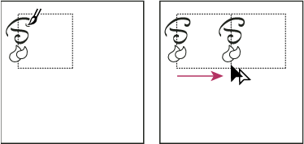

Construct irregularly textured patterns
- Drag the rectangle to the right; then press Alt+Shift
(Windows) or Option+Shift (Mac OS) to create a copy and
to constrain the move.

Draw texture on the left side of bounding box (left), and then copy texture and rectangle (right).
When the upper left corner point of the copy snaps to the upper right corner point of the bounding box, release the mouse button, and then release the keys.
 If you know the exact
dimensions of the bounding box, you can select only the textures
and use the Move command to specify a horizontal move the width
of the rectangle. Be sure to click Copy instead of OK in the Move
dialog box.
If you know the exact
dimensions of the bounding box, you can select only the textures
and use the Move command to specify a horizontal move the width
of the rectangle. Be sure to click Copy instead of OK in the Move
dialog box.